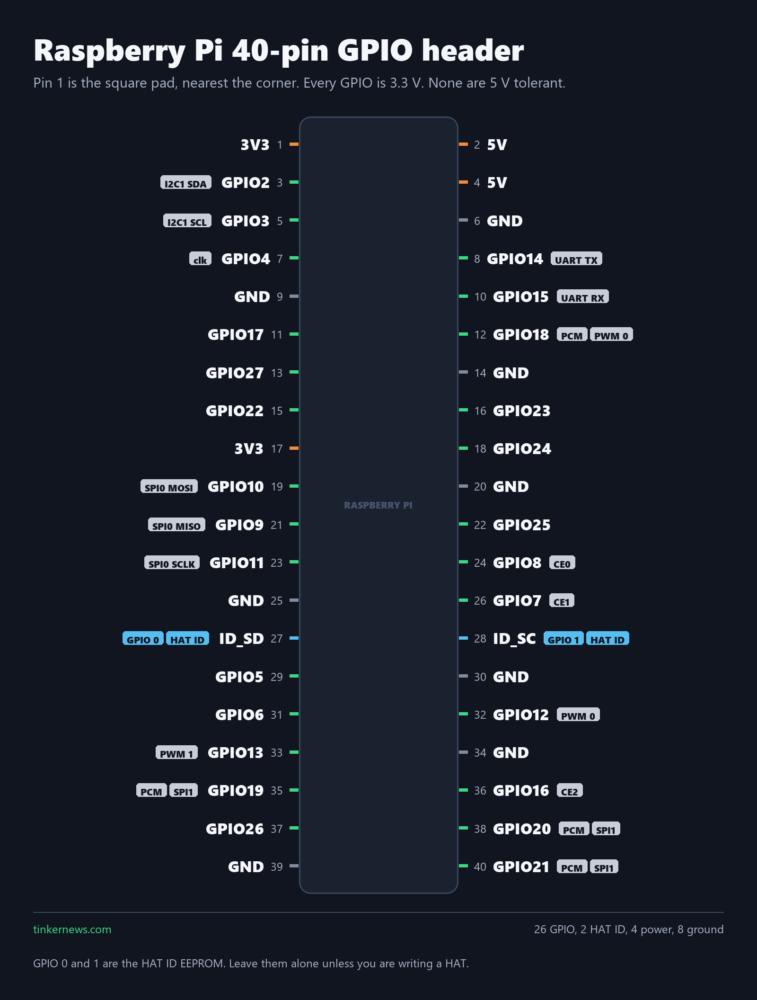
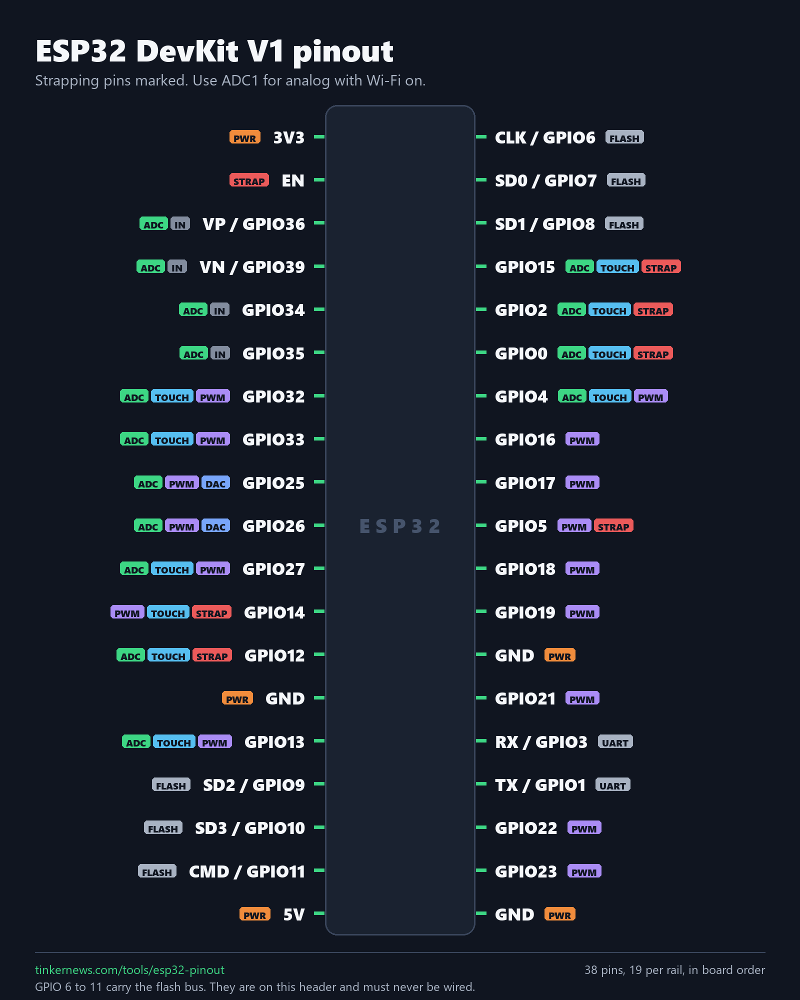

Printable pinout charts
Two charts to print and pin above the bench. They come from the same board data as our pinout pages, and every pin was checked against the vendor documentation before it was drawn. Free, no sign-up, no watermark.

Raspberry Pi 40-pin GPIO header
Forty pins: 26 GPIO, 4 power, 8 ground. The BCM number in bold is what your code and every tutorial use. The small number at the end of each row is the physical pin, so GPIO17 on pin 11 and GPIO11 on pin 23 are two different pins that look alike at a glance.
Download the PNG (1600 x 2112) · Raspberry Pi Zero 2 W board page


ESP32 DevKit V1, 38 pins
Nineteen pins a side. Six of them, GPIO 6 to 11, are wired to the SPI flash on the module. They really are on this header, and they have to stay unconnected. The FLASH tag is there so you see that before you wire anything, and ADC1 is the ADC to use while Wi-Fi is on.
Download the PNG (1600 x 2000) · ESP32 DevKit V1 pinout page

How to read either chart
- The number at the end of each row is the physical pin. On the Pi, odd pins run down the left and even pins down the right, and pin 1 is the square pad.
- The bold label is the name your code uses. On the Pi those are BCM numbers, and they do not match the physical position.
- Small tags are the alternate functions the pin takes at boot: I2C, SPI, UART, PWM, ADC, touch, strapping.
- Orange is power, grey is ground, green is a GPIO you can drive.